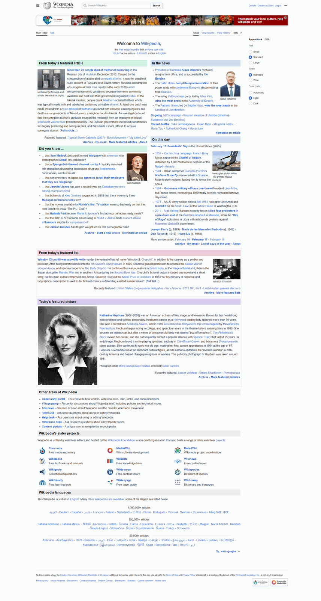
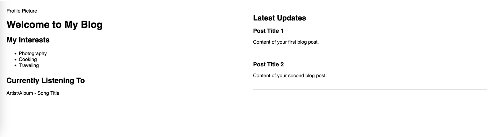

Wikis and Blogs: Wiki and WordPress
Wikis and blogs are two popular ways of creating and sharing information on the Web. They allow people to publish content, communicate and work together. Although they have different purposes, both have changed how information is shared online.
Explore the topicWhat Are Wikis?
A wiki is a website where many people can create, edit and organize information together. One person does not have to write every page because several contributors can improve the same content. This makes wikis useful for group projects, knowledge sharing and information that changes over time. Users can find, add and edit content, making a wiki a shared source of information (Woods & Thoeny, 2007).
Wikipedia is one of the best-known examples of a wiki. It allows volunteers from different parts of the world to create and update encyclopedia articles. Wikis can also be used privately by schools, universities and companies. For example, a team can use a private wiki to organize project notes and share important information.
Wikipedia runs on MediaWiki, free and open-source wiki software. MediaWiki keeps earlier versions of edited pages, so contributors can review changes and restore previous content when necessary (MediaWiki contributors, n.d.).

What Are Blogs?
A blog is a website or part of a website where individuals or organizations publish posts. These posts often contain personal opinions, news, tutorials or information about a specific topic. They are usually displayed in chronological order, with the newest posts appearing first.
Unlike a wiki, a blog is usually managed by one author or a small group of writers. Readers can often leave comments and discuss the published content. Blogs are used by students, researchers, businesses and people who want to share their knowledge or experiences online.

WordPress
WordPress started as a blogging platform, but it is now also used as a content management system (CMS). A CMS helps users create, edit and manage website content. WordPress can be used for personal blogs, business websites and many other types of online projects.
Two important features of WordPress are themes and plugins. Themes control the appearance of a website, while plugins add extra features and functions. These tools allow website owners to customize their websites without building every feature from the beginning. Libraries, for example, can use WordPress to create websites with different needs and levels of complexity (Jones & Farrington, 2013).
WordPress was launched in 2003 by Matt Mullenweg and Mike Little as a project based on the earlier b2/cafelog software. It is open-source software, which means its code can be studied, modified and shared under its license (WordPress.org, n.d.).
Wikis vs. Blogs
Wikis and blogs both help people share information, but they are organized in different ways. A wiki focuses on shared knowledge and collaboration, while a blog usually focuses on publishing posts and updates.
| Feature | Wikis | Blogs |
|---|---|---|
| Main purpose | Collaborative knowledge sharing | Publishing articles and updates |
| Editing | Multiple contributors | Usually one author or a small team |
| Structure | Connected pages | Posts in chronological order |
| Examples | Wikipedia | Medium, WordPress blogs |
Why Do Wikis and Blogs Matter Today?
Wikis and blogs matter because they make it easier for people to publish information, work together and share ideas with wider audiences. In education, students can use wiki pages to organize group work, while blogs can help students and researchers explain their ideas to readers.
Blogs can also support academic communication. Researchers can use them to share their work and discuss new ideas with other people. Puschmann (2014) explains that blogging and microblogging can support scholarly communication, but they do not simply replace traditional academic publishing.
However, information published online is not always accurate or trustworthy. Readers should check who wrote the content, what evidence is provided and when it was published. Website owners and contributors should also correct old or misleading information.
In my opinion, wikis are more useful when people need to build and update shared information. Blogs are better when someone wants to publish opinions, articles or regular updates. Both tools remain important because they give people different ways to create and share information on the Web.